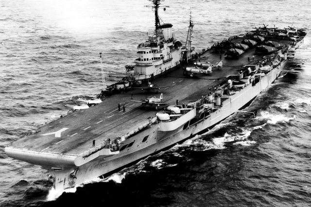
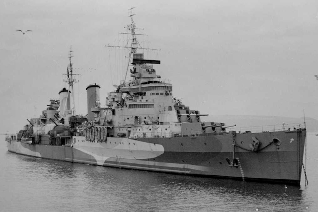
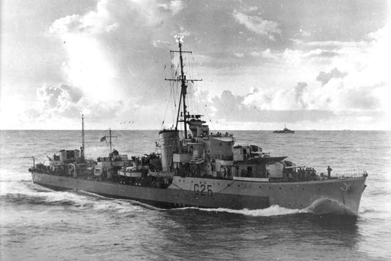
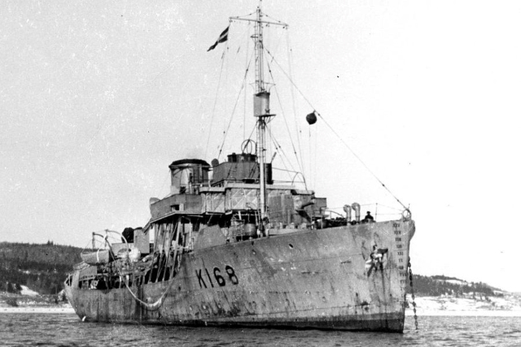
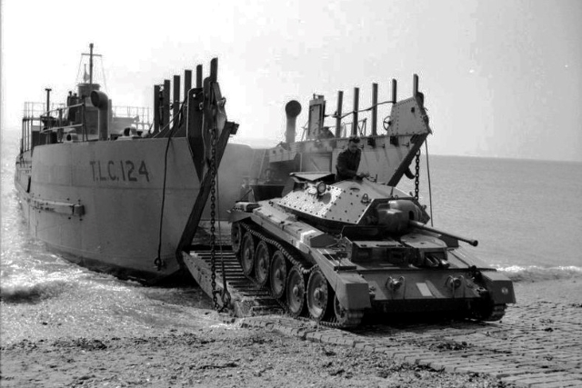

Hadihajók fogalma
A hadihajó katonai célra épített, általában felfegyverzett vízi jármű.
Állami haditengerészet állományába tartozik. Személyzete katonai szolgálatban áll és megfelelő egyenruhát visel.
A hadihajók külön katonai zászlót (hadilobogót) hordoznak.
A hadihajók története évezredeken át szinte egybeesett fő vonalaiban a a hajók történetével.
Az ókorban és a középkorban minden hajózás kockázatos vállalkozásnak számított, nem csak a természeti nehézségek, hanem az ellenfelek lehetséges megjelenése miatt is.
A kereskedelmi hajóknak ezért fel kellett készülniük a védekezésre, illetve gyakran maguk sem hagytak ki egy könnyű zsákmányt a tengeren.
Leggyakoribb hadihajó típusok

Repülőgép-hordozó
A repülőgép-hordozó felszálló fedélzettel ellátott, repülőgépeket hordozó hajótípus.
A második világháború végéig nehéz, könnyű és kísérő repülőgéphordozók épültek.
A második világháború után csapásmérő, kísérő, tengeralattjáró-vadász és támogató osztályokat alkottak.

Cirkáló
A cirkáló közepes nagyságú, gyors hadihajótípus. A vitorlás hajók korában a cirkálók voltak a flotta szemei.
Ekkor még nem egy bizonyos hajótípust illettek ezzel a névvel, hanem összefoglaló megnevezése volt a kisebb, gyors hadihajóknak (fregatt, szkúner, brigg, korvett).
Igazából ezek közül a fregatt tekinthető elsősorban a cirkáló elődjének.

Romboló
A romboló hadihajó-típus, melyet a 20. század elején arra terveztek, hogy a flottát megvédjék a torpedónaszádok támadásaitól, innen kapták a nevüket is:
torpedónaszád-romboló = torpedóromboló = romboló. Az elnevezésük körüli zűrzavarra a fent említett háromféle elnevezésű, de azonos hajót takaró elnevezés mellett az is okot adhat,
hogy egyes országokban a flottillavezető hajókat is rombolóknak hívják.

Korvett
A korvett (angolul corvette) mint hadihajó-típus fogalma az idők folyamán többféle hajót is takart.
Eredetileg a 18. és 19. századbeli, teljes vitorlázatú, de a sorhajónál és fregattnál kisebb hadihajókat nevezték így.
A 20. század végén, a 21. elején a korvettek 500–1500 tonnás, 20–22 csomós sebességre képes, régebbi építésű partvédő vagy konvojkísérő hajók,
főleg csöves tüzérséggel felszerelve.

Partraszállító hajó
A partraszállító hajó vagy gyakran partraszálló hajó a partraszállítási (deszant-) hadműveleteknél alkalmazott különleges felszereltségű hajó.
Előtte általában csónakokkal rakodták ki a katonákat és a felszerelést, de az új követelmények új megoldásokat kívántak.
Létrehozásuk a második világháború folyamán kialakult hadi helyzetnek köszönhető. Többféle méretben és különleges feladatra alakítottak ki hajókat, amik mára tovább fejlődtek.